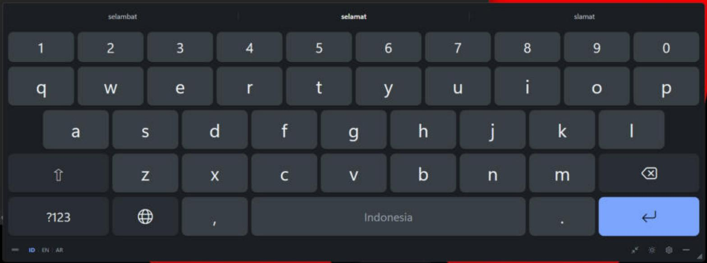

Tarik satu garis lewat huruf-hurufnya, lepas, katanya langsung terketik. Keyboard layar untuk Windows 10 dan 11.

Ke aplikasi apa sajaBrowser, Notepad, editor. Keyboard tidak mencuri fokus.
ID · EN · العربيةGanti bahasa sekali ketuk. Arab kanan-ke-kiri.
Offline, gratisPrediksi jalan di PC-mu. Tak ada teks yang diunggah.
github.com/farishiddiq
/slide-keyboard